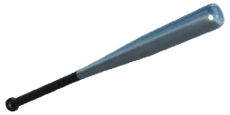
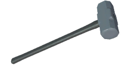
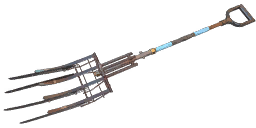

Researchmaximum 80
One counter is shared by all three tiers. “Counter” is the value that unlocks the tier, “more” is how much further that is from the tier before it; the task text is the game's own for that threshold.
| Tier | Counter | More | Task | |
|---|---|---|---|---|
| Bronze | 3 | 3 | Destroy 3 machines while under the effects of a Radioactive First Aid Kit. | |
| Silver | 20 | 17 | Destroy 20 machines while under the effects of a Radioactive First Aid Kit. | |
| Gold | 80 | 60 | Destroy 80 machines while under the effects of a Radioactive First Aid Kit. |
Related
What the research task or the description names:
Weapons it fits3 of 38
The weapons Flurry of Blows goes on. Only Exceptional and Special weapons have a Support slot; the badges show the qualities of each weapon that take it.
| Weapon | Qualities | Type | Pack |
|---|---|---|---|
 Brännboll bat | ExceptionalSpecial | Melee | Base game (melee update) |
 Sledgehammer | ExceptionalSpecial | Melee | Base game (melee update) |
 Resistance Pitchfork | ExceptionalSpecial | Melee | Resistance |
Doesn't fit35 weapons
Möller PP, Klaucke 17, .44 Magnus, N9 Handgun, Volkov Pistol, Iron Condor, 12G Pump-Action, Sjöqvist Semi-Auto, RACS-12 Semi-Auto Shotgun, M/46 "Kpist" SMG, HP5, COM-10 SMG, Vosa vz.68, Meusser Hunting Rifle, "Älgstudsare" Hunting Rifle, Pansarvärnsgevär 90, Kotenok Sniper Rifle, S21, Vintovka 1891, AI-76 Assault Rifle, Automatgevär 4, Automatgevär 5, N16 Assault Rifle, AT-WAD Assault Rifle, Kvm 59 Machine Gun, Kvm 89 Squad Automatic Weapon, N60 Machine Gun, PM-71 Machine Gun, N144 Minigun, G79 Grenade Launcher, MGR-6 Grenade Launcher, Granatgevär m/49, RLG-7, Resistance Flamethrower, Resistance Heavy Bow